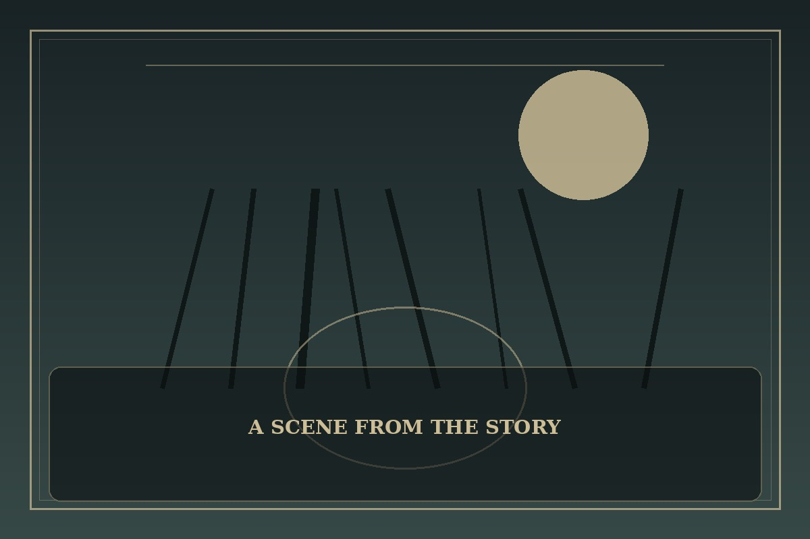

Pick Me Up, Infinite Gacha
Synopsis
A veteran player wakes inside a punishing summoning game, now responsible for fragile allies who depend on his choices. Strategy matters, but so does treating every teammate as a person rather than a number.
Chapter 1: The Lowest-Rarity Hero
The loading screen vanished, leaving a cold stone courtyard and a team of nervous strangers. A status window hovered in the air, labeling each of them with numbers that seemed to decide their worth before they had spoken a word.
Rin had spent years optimizing game teams, sacrificing weak units for a better chance at victory. Here, the lowest-ranked recruit was a quiet girl whose hands shook around her shield. The tutorial urged him to send her forward as bait, promising a larger reward if she survived.
He rejected the suggestion and redesigned the formation around the team’s actual strengths. Their victory was messy and barely earned, but every member returned. The game had given him a party; the harder task was learning to lead people who could feel the cost of failure.

This fan-made sample is an original piece created for a student website project; it is not an official chapter of Pick Me Up, Infinite Gacha.